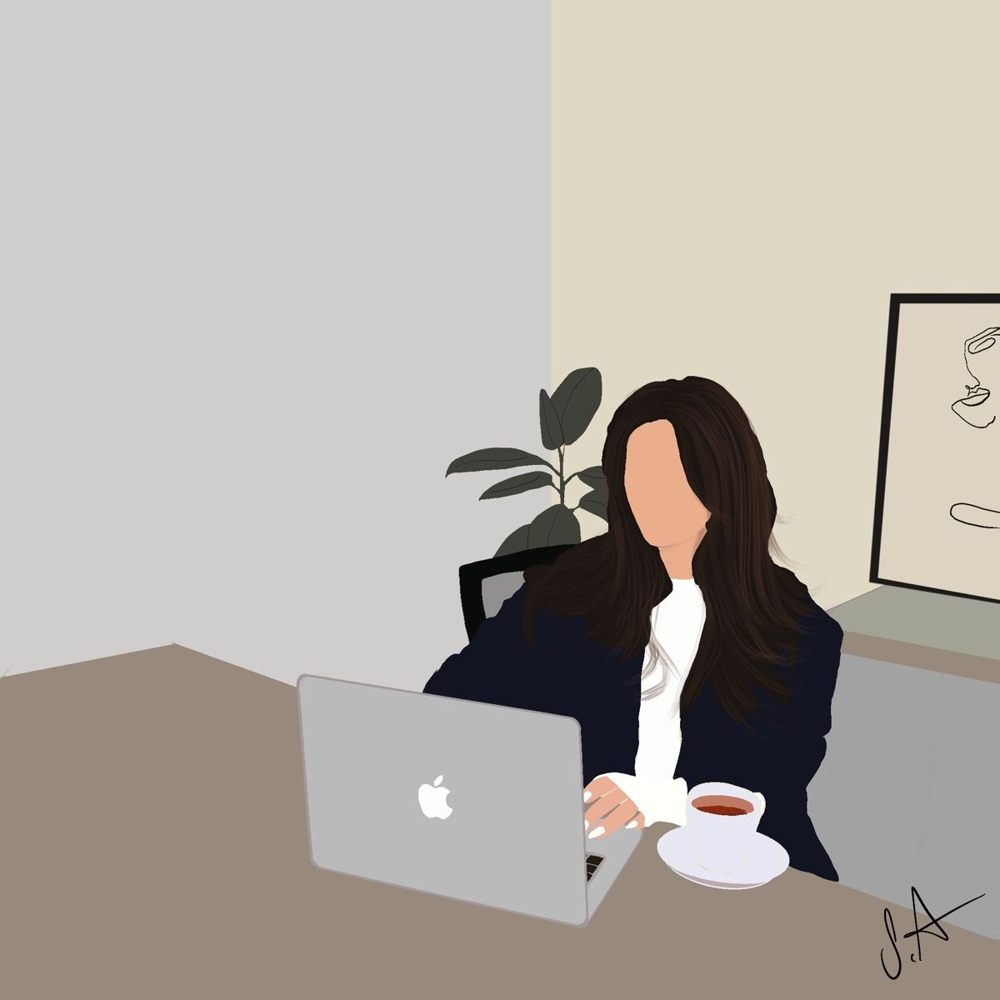

PROJECT SNAPSHOT
⌘
Smart University
Campus Network
Designing a smart campus network using Cisco Packet Tracer, connecting buildings, floors, and devices.
Cisco Packet TracerPERSONAL PORTFOLIO · YEMEN
I'm Yusra Osan
I’m passionate about technology, programming, and turning ideas into thoughtful digital experiences. I’m always learning, building, and finding new ways to grow.

01 — GET TO KNOW ME
I’m Yusra Osan, a motivated Information Technology student at the University of the Arabs.
With a strong academic background and a genuine passion for technology, I enjoy exploring web development, computer networking, and database management. I’m a dedicated learner who looks for opportunities to develop technical skills and gain practical experience through university projects and independent learning.
02 — THE JOURNEY SO FAR
Every achievement is a reminder to keep learning and aiming higher.
University of the Arabs · Level 3
| Academic achievement | Result |
|---|---|
| Level 1 | 1st Place · Excellent |
| Level 2 | 3rd Place · Very Good |
| High School Graduation | 97% |
03 — MY TOOLKIT
A growing set of technical and personal skills that I bring to every learning experience.
Good work takes more than technical knowledge. These qualities shape how I learn, collaborate, and approach challenges.
Arabic Native
English Good
04 — LEARNING BY DOING
Turning university lessons into practical experience, one project at a time.
Designing a smart campus network using Cisco Packet Tracer, connecting buildings, floors, and devices.
Cisco Packet TracerPracticing website structure, styling, and interactive ideas using HTML, CSS, and JavaScript.
HTML · CSS · JavaScriptLearning how to organize information and work with database design and management concepts.
DBMSBuilding programming knowledge and practicing object-oriented concepts through C# coursework.
C#05 — WHERE I’M HEADED
My goal is to strengthen my knowledge in Information Technology, improve my programming and web development skills, and gain practical experience through academic and professional opportunities — while contributing to innovative technology solutions.
Always learning. Always moving forward.06 — SAY HELLO
I’m always open to learning, sharing ideas, and connecting with people who are passionate about technology.